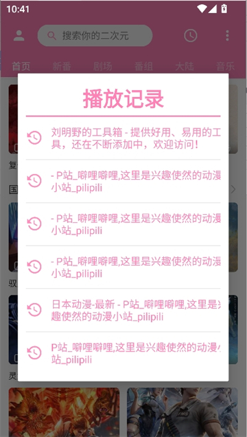

pilipili 是怎么做到"非官方却像官方"的？四个核心设计拆解
为什么这款第三方 B 站客户端的续播、同步、缓存体验跟官方客户端几乎一模一样？从账号复用、双写续播到私有缓存目录，拆解它的技术取舍。
我第一次接触 pilipili 是在pilipili官网，当时心里带着一个朴素的疑问：一个第三方客户端，凭什么敢跟官方掰手腕？
答案藏在一个很不起眼的细节里——我没登录账号之前，续播只存本地；一登录 B 站账号，续播进度立刻多端互通。这一条切换，暴露了它最核心的设计哲学：能借的就自己不造。这篇文章就从四个角度拆开来看，pilipili 是怎么用"不造轮子"的思路把体验做对的。
借官方账号体系，做无后端同步
很多第三方客户端的同步功能，是自己搭一套后端——用户注册、存数据、推送通知，全都自己扛。这意味着要维护服务器、要处理用户系统、要承担数据安全风险，而且用户还得多注册一个账号。
pilipili 没走这条路。它直接要求用户登录自己的 B 站账号，然后把续播进度、收藏夹、追番列表、观看历史这些数据，全部走 B 站官方 API 推到云端，再从云端拉回来。
这个决策带来的变化是革命性的。你在手机上用 B 站官方 App 看到第 3 集 20 分钟，打开 pilipili 也能续到同一个位置；反过来，在 pilipili 里收藏了一个视频，B 站网页版刷新后也能看到。同步不是 pilipili 和 pilipili 之间的事，是任何走同一个 B 站账号的客户端之间的事。
它的同步模型极其简单：
设备 A 做修改 → 实时推送到 B 站云端 → 设备 B 打开或定时拉取冲突处理也很直白——时间戳最近的赢。两台设备几乎同时改同一数据的概率本来就低，用时间戳覆盖足够了，搞复杂的 CRDT 或乐观锁都是过度设计。
代价是什么？pilipili 的同步功能完全依赖 B 站 API 的稳定性。B 站接口一变，同步就可能失效，得跟着改代码。但换来的好处是零后端维护成本、无额外账号系统、用户体验无缝衔接——这笔账对开发者来说太划算了。
双写续播：看完的视频为什么不续到结尾？
续播是 pilipili 最常用的功能之一，但你可能没注意到一个小细节：没看完的视频重新打开，直接跳到上次的时间点；看完的视频重新打开，跳到开头。
这个行为不是 bug，是设计上的刻意取舍。让我猜猜背后的思路：如果你看完了一个视频又打开它，大概率是想重看一遍——跳到结尾有什么意义？只有没看完时，续播才是刚需。
续播数据的存储是本地一份 + 云端一份。登录时双写，没登录就只写本地。本地快（毫秒级响应），云端跨设备（延迟 1~5 秒正常），两份互为备份。卸载应用或清除数据会丢本地那份，但只要账号还在，云端那份拉下来就能恢复。
这套双写模型的代价是离线缓存不参与同步。缓存的视频是纯本地文件，不会传到云端，换设备得重新缓存。从产品角度看，这是一个合理的边界——缓存涉及视频版权，跨设备同步缓存等于转存受版权保护的内容，合规风险很高。pilipili 选择把这道线画在这里，既规避了法律问题，又让同步模型保持简单。
私有缓存目录：为什么不能用文件管理器直接看？
pilipili 的缓存文件放在 Android 的 /data/ 分区下应用私有目录里，普通文件管理器看不到，也不能直接复制到其他设备。你想导出缓存视频，只能用应用内的"分享"功能。
这个设计背后有两层考虑。第一层是版权保护——如果缓存文件能直接被拷走传播，等于给盗版开了方便之门。放在私有目录，至少在技术上抬高了导出门槛。
第二层是避免用户误删或误操作。缓存不是下载——它是临时存放，应用随时可能清理、随时可能失效。如果用户能在文件管理器里看到一堆散乱的文件，很容易搞混哪些是缓存、哪些是真正下载的，误删了还会怪应用。
缓存的体积也有精细控制。单集 720P 大概 200~250MB，一部 12 集的番剧就是 2.5~3GB，默认存在内置存储。内置紧张可以改到 SD 卡，但不管存哪，应用都把它们当自己的私有领地——你在应用外看不到，也不应该在应用外动它们。

硬件解码默认开启：自动选择背后的取舍
打开 pilipili 的播放器设置，你会看到"硬件解码"默认值是"自动"。这个选项很有意思——大部分同类应用要么硬开硬件解码（追求性能），要么硬开软件解码（追求兼容），pilipili 选择了把选择权交给系统。
硬件解码用 GPU 处理视频流，能效比高、发热少，但部分机型有兼容性问题（花屏、闪退、音画不同步）。软件解码用 CPU，兼容性 100% 但耗电发热多。pilipili 的"自动"模式会根据设备能力和视频编码格式动态选择——能硬解就硬解，不行就软解兜底。具体哪些编码格式会触发自动切换、怎么手动锁定解码方式，pilipili文档里有一张对照表。
这背后是一个典型的降级设计模式：默认给最优体验，遇到问题自动退回保底方案。用户不需要理解"硬解/软解"这些概念，只需要享受流畅播放，真遇到问题再手动切换。
类似的降级还有很多——后台播放默认开（只播音频省资源），画中画默认关（占屏幕），倍速记忆默认关（怕干扰用户的默认习惯）。每一个"默认值"背后都是一次产品团队的取舍：能自动处理的就别让用户手动选，让用户手动选的就说明自动处理实在做不到。
这些原理意味着什么
把这四个设计放在一起看，pilipili 的整体策略就清晰了：核心体验借官方之力，边界上做最小化实现。
适合它的场景很明确：B 站重度用户、多设备追番党、不想折腾的普通用户。你用着官方的账号体系、同步到官方的云端、连 UI 交互都跟官方保持一致——唯一的不同是你用的是一个更轻、更快、没有广告的客户端。
不适合的场景也很明确：想导出缓存视频给别人看的（私有目录卡死了这条路）、不想登录账号的（没登录就是孤岛，跨设备同步完全失效）、追求高度自定义的（它的设置项够用但不算多）。
这就是 pilipili 的"非官方却像官方"的秘密——它不试图重新发明 B 站，而是在 B 站已经铺好的轨道上，把客户端这趟车开得更顺。关于它的文档和资源，GitHub、Gitee、GitCode三个仓库都有一份镜像，海外用户走 GitHub，国内访问更稳的是 Gitee 或 GitCode。